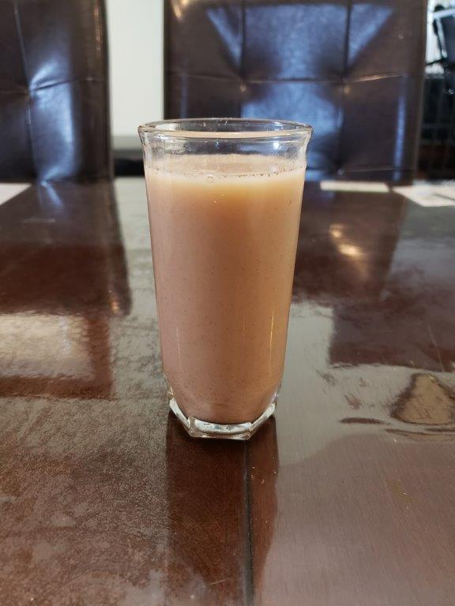

Horchata

Ingredients:
- 1 cup Uncooked long-grain rice
- 5 cups Water
- 1/2 cup Milk
- 1/2 tbsp Ground cinnamon
- 1/2 tbsp Vanilla extract
- 2/3 cup White sugar
Instructions:
- Put the rice and water into a blender and blend until the rice begins to break down, 1 minute. Let stand in room temperature overnight.
- Strain the rice water into a pitcher and discard the rice. Stir the milk, vanilla, cinnamon, and sugar into the rice water. Chill and stir before serving over ice.